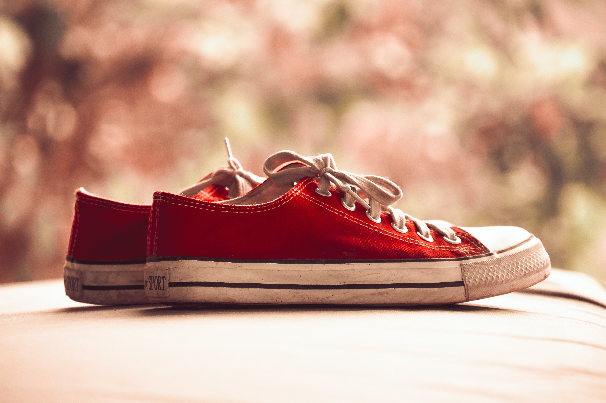
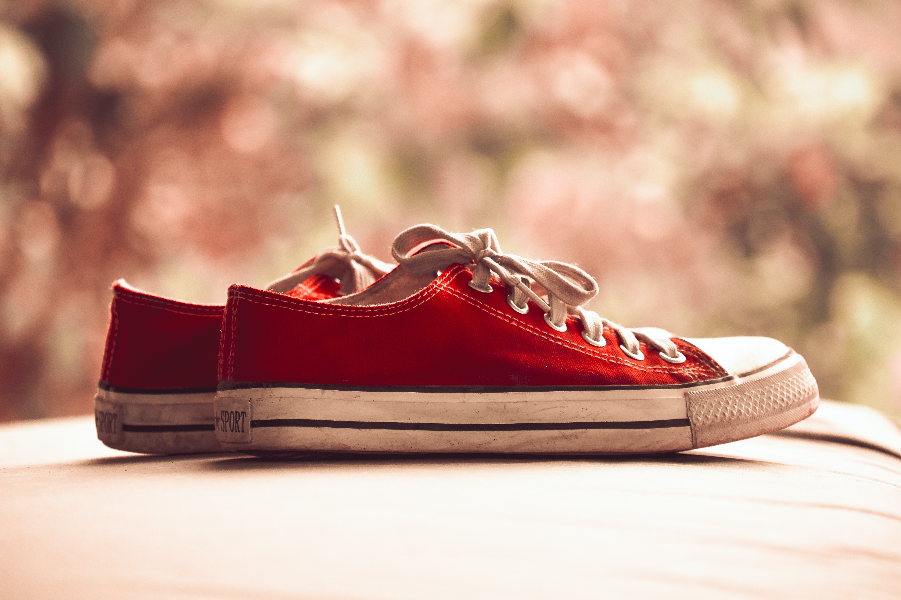

Tout commence au nord de Boston en 1908 avec la création de la Converse Rubber Shoe Company par Marquis Mills. A ses débuts, la firme américaine fabriquait des sabots en caoutchouc qui étaient notamment portés par les détenus des centres pénitenciers des Etats-Unis. Quelques années plus tard, Mills décidera de se diversifier. Il se lancera alors en 1915 dans la fabrication de chaussures de sport, tout d’abord pour le tennis, puis en 1917 pour le basketball. Si les 2 modèles étaient très différents des sabots au niveau de leur forme, ils avaient pour point commun la matière de leur semelle : le caoutchouc.
A son lancement, la sneaker que l’on connaît tous aujourd’hui ne s’appelle pas encore « All Star » mais « A11 Star ». Il s’agit d’un modèle montant doté d’une empeigne en cuir et d’une semelle en caoutchouc conçue pour procurer aux joueurs de basketball un excellent amorti et une parfaite stabilité sur les terrains. Elle arbore déjà à l’époque le logo en forme d’étoile de Converse sur lequel viendra se greffer en 1932 le nom de Chuck Taylor.
C’est la première fois qu’un modèle de sport se verra attribuer le nom d’un athlète, bien avant la Jordan de Nike, même si Taylor n’était quant à lui « que » semi-professionnel et malgré le fait que l’opération ne se fit pas sous la forme d’un sponsoring à proprement parler. Chuck Taylor ne percevra d’ailleurs aucune rémunération pour l’utilisation de son nom. « Sa chaussure » connaîtra dès lors un essor rapide dans le championnat américain de basketball dont elle équipera la majorité des joueurs jusqu’à la fin des années 60.
Etape 1 : Le dessin Tout commence par une vision ! En fonction d’un besoin préalablement identifié, le designer chaussure dessine la chaussure répondant à ce besoin. Durant cette première étape, rien n’est impossible. Le dessin du designer servira de guide tout au long des étapes de fabrication. A la fin de cette étape, un cahier des charges est défini et les matières sont choisies.
Etape 2 : La forme Le formier réalise à cette étape la base de toutes chaussures : la forme, la chaussure en 3D. Sa mission, mettre en forme le dessin tout en conservant les volumes nécessaires pour le confort du pied. C’est ce qui va définir le chaussant d’un modèle et rendre la chaussure agréable à porter ! Le formier ne va pas prendre en compte uniquement les éléments fournis par le styliste, il va penser et travailler la “forme” pour rendre la chaussure finale des plus confortable possible. La “forme” était anciennement en bois puis pour des questions de praticité et d’avancé technologique elle est aujourd’hui en plastique. Une fois validée, elle sera recréée dans toutes les pointures.
Etape 3 : Le patronnage A cette étape de la fabrication le patronnier /modéliste entre en scène. Il prend soin de réaliser une « coquille », c’est-à-dire une réplique moulée sur la “forme” dans un plastique très fin et rigide sur laquelle il pourra dessiner: Mettre le dessin sur forme. C’est sur cette coquille qu’il va reprendre le dessin du styliste et organiser la conception du patron de la chaussure. A cette étape, le patronnier va définir toutes les informations utiles comme les coutures, les perforations…
Etape 4 : La découpe Le coupeur se voit alors confier le patron du modèle. Il va sélectionner les peaux et découper les différentes parties du patron. Les découpes sont faites au laser, au jet d’eau ou à l’emporte pièce, ou encore à la main avec un tranchet ou un cutter adapté.
Etape 5 : Le piquage Les différents éléments découpés vont être assemblés pour former le dessus de la chaussure cela s’appelle le piquage. A cette étape les différentes pièces de la chaussure vont être cousues ensembles et la chaussure va commencer à prendre forme. La fin de l’assemblage est marquée par une opération s’appelant le claquage, consistant à relier l’avant et l’arrière de la chaussure formant ainsi la tige.
Etape 6 : Le montage sur "forme" La méthode traditionnelle est particulièrement complexe, la tige est remise sur la forme et les matières vont être travaillées pour épouser parfaitement les volumes choisis. La première de montage est fixée sous la forme avant de mettre la tige sur forme.
Etape 7 : Le semelage Ensuite c’est au tour de la semelle de faire son entrée. Plusieurs méthodes sont envisageables pour le semelage. 1 – Pour les chaussures de conception plus traditionnelles, elle va tout d’abord être encollée à la première de montage puis cousue. 2 – Pour les modèles de chaussures de travail, la semelle est le plus souvent injectée. Un moule de fond est placé sous la tige et le polyuréthane est alors envoyé sous pression dans le moule et vient adhérer directement à la matière de la tige.
Etape 8 : Les finissions ou le "Bichonnage" Brûlage des fils qui dépassent, laçage, cirage, mise en boîte… L’étape des finitions est l’étape des petits détails qui ont toute leur importance.
 
